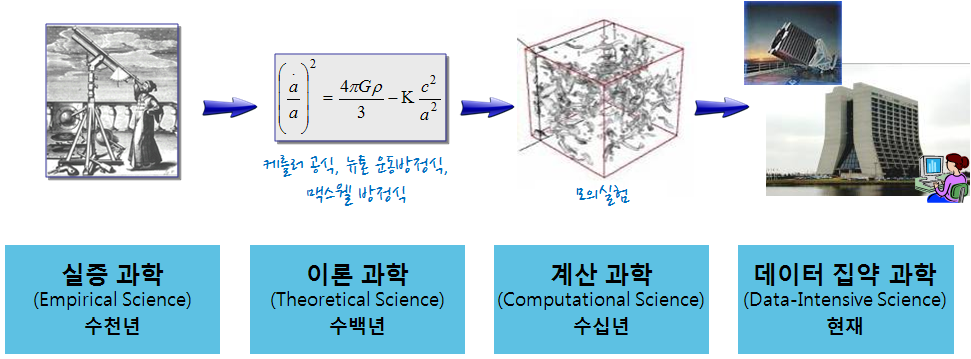

데이터 과학
왜 고성능 R 아키텍처가 필요한가?
학습 목표
- 컴퓨팅 사고와 4번째 패러다임을 학습한다.
- 고성능 R 아키텍처가 요구되는 상황을 이해한다.
1. 마이크로소프트 4번째 패러다임
고 짐 그레이 박사 바다에서 실종되기 전에 주장했고, 사후 책으로 출간되어 인터넷에서 무료로 다운로드 받아 읽어 볼 수 있다.
모든 과학에서 데이터는 기하급수적으로 증가하고 있고, 거의 모든 과학은 데이터 주도(Data-driven) 현상이 나타나고 있다. 물리학과 생명과학이 통계와 컴퓨터 과학의 빅데이터를 통한 수렴현상도 심심치 않게 볼 수 있다.
- 실증 과학(Empirical Science): 수천년에 걸쳐 자연현상을 실증 과학의 시대.
- 이론 과학(Theoretical Science): 수백년에 걸쳐 모형과 일반화를 통한 이론 과학의 시대.
- 계산 과학(Computational Science): 수십년에 결쳐 복잡한 현상을 모의실험을 컴퓨터를 사용한 계산 과학 시대.
- 데이터 집약 과학(Data-Intensive Science): 현재는 이론, 실험, 통계를 사용한 계산 결과를 통합하는 데이터 집약 과학 시대.
과학이 가정-주도(Hypothesis-Driven) 에서 데이터-주도(Data-Driven) 발견 으로 급격히 이동 중으로 전혀 새로운 도전에 직면하고 있다.
통상, 데이터를 수집하고, 발견과 분석을 수행하고 이를 발표하는 과정을 거친다. 하지만, 기하급수적으로 증가하는 데이터에 의해 다양한 도전과제가 산적해 있다. 과거에는 데이터를 수집하고 분석과 발견 과정을 거쳐서 출판 게시했다면, 다양하고 휘발성이 강하고 매우 큰 데이터를 수집하고 나서 인터넷에 게시하여 공개하면 데이터 분석과 탐색을 통해 정보를 추출하고 모형을 개발하는 것으로 과정이 변경됨.
- 기하급수적인 데이터 증가: 분산된 환경에서 데이터 수집과 급증하는 데이터 크기.
- 새로운 분석 패러다임: 데이터 연합체와 데이터 분석으로 이동.
- 새로운 게시 패러다임: 과학자가 점점 출판업자와 전시 책임자같은 큐레이터와 같이 되어감.
그레이 법칙 (Gray’s Laws)
- Scientific computing is becoming increasingly data intensive.
- 과학 컴퓨팅이 점차 데이터 집약 중심으로 변모하고 있다.
- The solution is in a “scale-out” architecture.
- 해답은 스케일-아웃 아키텍쳐로 범용 블록을 필요시 모듈화해서 확장하는 구조를 갖는다.
- Bring computations to the data, rather than data to the computations.
- 데이터를 컴퓨터에 넣기 보다는 데이터에 컴퓨팅을 가져간다.
- Start the design with the “20 queries”.
- 20가지 질문으로 설계를 시작한다.
- Go from “working to working”.
- 폭포수 모형보다는 애자일 방식으로 개발한다.

2. 대한민국과 과학
세계은행(World Bank)과 한국개발연구원(KDI)은 약 2년여 기간의 공동연구를 통해 1960-2005 년간 한국 경제발전 과정에 관한 보고서를 출간했다. 경제성장이 지속되기 위해서는 생산성 증가가 대단히 중요하고, 1960년 이후 한국경제의 성공은 광의의 지식축적에 기인한 것으로 1960-2005년 사이 한국의 실질 1인당GDP의 75%가 광의의 지식축적에 기인한 것으로 분석했다.
경제발전단계에 따라, 교육 및 인적자원 개발 확대, 과학기술투자, 정보통신 인프라 확충을 통해 지식경제(Knowledge Economy)로의 전환을 이루고 괄목할만한 경제발전을 이룬 것으로 보고서는 적고 있다.

3. 대한민국과 4번째 패러다임
’13년 창조경제의 개념과 성공조건에서 김광두 국가미래연구원장이 농업사회에서 산업사회를 넘어가고 산업사회에서 지식사회를 넘어가고 있으며 지금은 융합, 지식 창조산업이 중추 산업이 되며, 소프트웨어, 콘텐츠, 과학기술이 핵심 기반이 되며 창조경제를 견인할 것으로 내다봤다.
카네기멜론 대학 쟈넷 윙(Wing) 교수가 이론적 사고(Theoretical Thinking), 실험적 사고(Experimental Thinking)와 더불어 컴퓨팅 사고(Computational Thinking) 가 향후 인간의 사고 체제를 지배하는 중추적인 역할을 할 것이라고 주장했다. 산업혁명 이후로 산업, 즉 공장에서 필요한 인력을 육성하고 공급하기 위해서 수학과 공학을 초중등 과정에서 집중적으로 교육하였으며 이러한 전통이 지금까지 이어져 국내 및 전세계 누구나 이론적 사고체계는 익숙하고 친숙하다. 통계가 근간을 이루는 실험적 사고는 스몰 데이터(Small Data)를 일부 초중등 과정에서 접목하고 있지만, 학교를 졸업하고 현실에서 많이 접하게 되고 필수적인 것임에도 통계에 대한 충분한 교육 및 훈련을 받지 못하고 사회에 진출하고 있는 것도 사실이다. 이러는 와중에 빅데이터(Big Data)가 10년도 되지 않는 짧은 시간에 성급 우리곁에 다가왔고, 추상화(Abstraction)와 자동화(Automation)가 근간을 이루는 컴퓨팅 사고도 새로운 사고체계로 함께 받아들여지고 있다.

쟈넷 윙 박사도 컴퓨팅 사고에서 기계학습(Machine Learning)의 중요성을 언급하며 기계학습이 거의 모든 과학영역에서 엄청난 혁신을 이루어 내고 있다고 평가하고 있다. 결국 수학적 사고, 통계적 사고, 컴퓨팅 사고가 수천년에 결쳐서 인간이 갖추어야할 사고 체계로 데이터 집약 과학과 기계학습/딥러닝이 누구나 배워야하는 필수 역량으로 자리잡아가고 있다.
또한, ICBM(IoT, Cloud, Big Data, Machine Learning) 기반 스타트업이 큰 성공을 거두고 기업영역에서 영향력을 확대해감에 따라 “사업이 과학화되는 현상”이 가속화되고 있다.